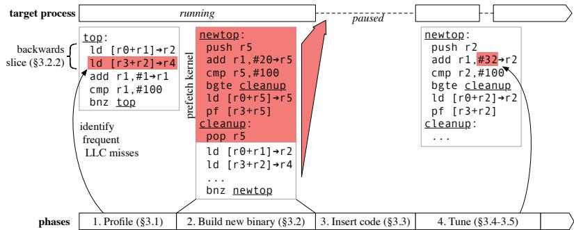
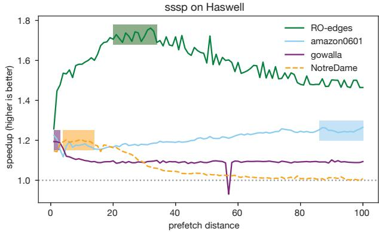
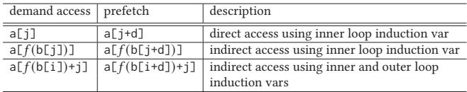
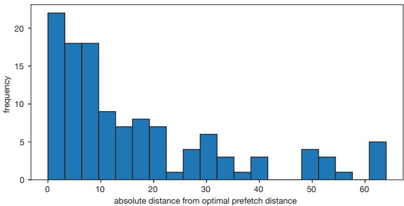

RPG2: Robust Profile-Guided Runtime Prefetch Generation 论文解析¶
0. 论文基本信息¶
作者 (Authors)
- Yuxuan Zhang
- Nathan Sobotka
- Soyoon Park
- Saba Jamilan
- Tanvir Ahmed Khan
- Baris Kasikci
- Gilles A Pokam
- Heiner Litz
- Joseph Devietti
发表期刊/会议 (Journal/Conference)
- 29th ACM International Conference on Architectural Support for Programming Languages and Operating Systems, Volume 1 (ASPLOS ’24)
发表年份 (Publication Year)
- 2024
1. 摘要¶
目的
- 解决传统软件数据预取（prefetching）技术在面对不同程序输入和处理器微架构时表现不稳定的问题。静态编译器插入的预取指令无法适应运行时变化，可能导致性能提升，也可能因缓存污染或带宽竞争而造成显著性能下降。
- 设计一个纯软件、在线的系统，能够在程序运行时动态地注入、调优甚至回滚预取指令，以实现鲁棒的（Robust）性能收益，即在能提升性能时最大化收益，在有害时能安全回退到原始性能。
方法
- 提出 RPG2 (Robust Profile-Guided Runtime Prefetch Generation) 系统，其工作流程分为四个阶段：
- Phase 1: Profiling：利用 Linux
perf工具和 Intel PEBS (Precise Event-Based Sampling) 硬件特性，对运行中的进程进行采样，识别导致LLC (Last-Level Cache) 的热点指令。 - Phase 2: Code Analysis & Generation：基于 BOLT (Binary Optimization and Layout Tool) 框架，对二进制文件进行分析。通过后向切片（Backwards Slicing）技术，识别并支持三类内存访问模式（特别是间接内存访问
a[b[i]]），并生成一个逻辑上为 NOP 的预取内核（prefetch kernel）。 - Phase 3: Runtime Code Insertion：将包含预取内核的新函数版本注入到目标进程的地址空间中。为解决正在执行的函数调用问题，RPG2 实现了针对 C/C++ 等非托管语言的栈上替换（On-Stack Replacement, OSR），利用 BOLT 生成的 BATT (BOLT Address Translation Table) 来安全地重定向程序计数器（PC）。
- Phase 4: Monitoring And Tuning：通过测量 IPC (Instructions Per Cycle) 作为性能指标，对预取距离（prefetch distance）进行有界搜索（先确定方向，再粗粒度跳跃，最后二分查找）。如果所有距离都无法带来性能提升，则回滚（Rolling Back）到原始代码。
- Phase 1: Profiling：利用 Linux

Figure 4. RPG2 proceeds through four phases when optimizing a target process.
结果
- RPG2 在多种基准测试（如 CRONO 套件中的
sssp,bfs,pr）和不同输入集（SNAP 数据集）上进行了评估，展示了其有效性与鲁棒性。 - 性能提升：在预取有益的场景下，RPG2 能够获得最高 2.15× 的加速比，性能与最先进的静态预取编译器（如 APT-GET）相当。
- 避免性能下降：在预取有害的场景下（如
bfs基准测试中的许多输入），RPG2 能成功检测并回滚，从而避免了高达 50-70% 的性能损失，显著优于静态方案。 - 操作开销低：关键的停顿世界（stop-the-world）操作（如代码注入、距离调整）平均仅需 1-4 毫秒，对整体性能影响很小。
| Benchmark/Input | RPG2 (All) | RPG2 (Speedup) | RPG2 (Slowdown) | APT-GET / Offline |
|---|---|---|---|---|
| **pr **(Cascade Lake) | ~1.1x | ~1.3x | ~1.0x | ~1.3x / ~0.9x |
| **bfs **(Cascade Lake) | ~0.9x | ~1.1x | ~0.8x | N/A / ~0.5x |

Figure 7. RPG2 and baseline performance on Cascade Lake (top) and Haswell (bottom).
- 预取距离调优准确性：对于具有单一最优距离的输入，RPG2 的搜索结果在 10 以内的比例超过一半。
- 输入与架构敏感性：实验验证了预取效果对输入和微架构的高度敏感性，例如
sssp在不同输入下的最优距离差异巨大，pr在 Cascade Lake 和 Haswell 上的表现甚至可能完全相反。

Figure 1. The sssp benchmark from CRONO [2] has very different optimal prefetch distances (shaded regions) with different inputs.

Figure 2. The pr benchmark from CRONO [2] sees a speedup or a slowdown with prefetching, depending on the microarchitecture.
结论
- 静态软件预取是一种“双刃剑”，其效果极易受到程序输入和处理器微架构的影响，难以在通用场景下保证鲁棒性。
- RPG2 通过在线、动态的方式解决了这一核心挑战。它不仅能像静态编译器一样在有利场景下提供显著的性能加速，更重要的是，它具备自我保护机制，能在预取有害时自动回滚，从而保留了原始性能。
- RPG2 证明了在运行时进行动态二进制优化和调优是应对复杂、多变硬件环境的有效途径，为构建更智能、更安全的性能优化框架提供了新的思路。
2. 背景知识与核心贡献¶
研究背景与动机
- 数据缓存预取 (Data cache prefetching) 是一种关键的性能优化技术，旨在通过提前将数据加载到缓存中来掩盖内存访问延迟。
- 然而，有效的预取面临巨大挑战：预取过早会污染缓存 (pollute the cache)，预取过晚会无法避免缓存缺失 (fail to avoid cache misses)，并且会与程序的正常“需求”访问竞争有限的片外内存带宽。
- 现有的静态编译器方法（如 APT-GET）虽然可以插入预取指令，但它们生成的二进制文件包含固定的预取距离，无法适应运行时变化。
- 该论文通过大规模实验揭示，预取的有效性高度依赖于程序输入 (program input) 和 处理器微架构 (processor microarchitecture)。例如：
- 在
sssp基准测试中，不同输入（如ROedges和gowalla）的最佳预取距离差异巨大。
- 在
Figure 1. The sssp benchmark from CRONO [2] has very different optimal prefetch distances (shaded regions) with different inputs.
- 在
pr基准测试中，同一个输入在 Intel Cascade Lake 和 Intel Haswell 上的表现可能完全相反（一个加速，一个减速）。
Figure 2. The pr benchmark from CRONO [2] sees a speedup or a slowdown with prefetching, depending on the microarchitecture.
- 在
bfs基准测试中，预取甚至会导致高达 50-70% 的严重性能下降。

Figure 3. The bfs benchmark from CRONO [2] often (but not always) suffers significant performance slowdown with prefetching.
- 这些发现表明，预取是一把“双刃剑 (double-edged sword)”，其脆弱性使得开发者对其望而却步。
核心贡献
- 提出了 RPG2 (Robust Profile-Guided Runtime Prefetch Generation)，这是一个纯软件、在线 (online) 的系统，能够在程序运行时动态地注入、调优甚至回滚预取指令，以最大化性能并保证鲁棒性。
- RPG2 的核心工作流程分为四个阶段：
- Phase 1: Profiling：使用硬件性能计数器（如 Intel PEBS）对运行中的进程进行剖析，识别出导致末级缓存 (LLC) 缺失的热点指令，并建立基线 IPC。
- Phase 2: Code Analysis & Generation：基于 BOLT (Binary Optimization and Layout Tool) 框架，在二进制层面分析代码模式（特别是间接内存访问 (indirect memory accesses)），并生成一个逻辑上为 NOP 的预取内核 (prefetch kernel)。
Figure 4. RPG2 proceeds through four phases when optimizing a target process.
-
Phase 3: Runtime Code Insertion：利用 ptrace 和自定义库 libpg2，将包含预取内核的新函数版本注入到目标进程的地址空间中，并通过创新的 On-Stack Replacement (OSR) 技术，将正在执行的旧函数调用无缝切换到新版本，这是首个支持 C/C++ 等非托管语言的 OSR 实现。
-
Phase 4: Monitoring And Tuning：通过一个有界搜索算法在线调整预取距离，并持续监控 IPC (Instructions Per Cycle) 性能指标。如果任何预取距离都无法带来性能提升，RPG2 会自动回滚 (roll back) 到原始代码，从而避免性能损失。
-
RPG2 的关键优势在于其鲁棒性 (robustness)：它不仅能提供高达 2.15× 的加速比（与最佳静态编译器相当），还能在预取有害时安全地恢复原始性能，这是静态方法无法做到的。
3. 核心技术和实现细节¶
0. 技术架构概览¶
整体技术架构
RPG2 是一个纯软件的、在线（online）运行时系统，用于为正在执行的 C/C++ 程序动态地生成、注入和调优数据预取（prefetch）指令。其核心目标是克服静态预取方案对程序输入和处理器微架构的敏感性，通过实时性能反馈来确保预取的鲁棒性（Robustness），即在提升性能的同时，能自动回滚以避免因预取不当导致的性能下降。
RPG2 的工作流程分为四个紧密衔接的阶段，如图
Figure 4. RPG2 proceeds through four phases when optimizing a target process.
所示：
-
第一阶段：Profiling (性能剖析)
- 利用 Linux 的
perf工具和 Intel 的 **Precise Event-Based Sampling **(PEBS) 硬件特性，对目标进程进行采样。 - 监控 MEM_LOAD_RETIRED.L3_MISS 事件，以识别导致最后一级缓存（LLC）的指令地址（PC）。
- 默认采样 2 秒，并筛选出在其所属函数中贡献至少 10% LLC miss 的指令作为预取候选者。
- 利用 Linux 的
-
第二阶段：Code Analysis & Generation (代码分析与生成)
- 基于 **Meta 的 BOLT **(Binary Optimization and Layout Tool) 框架，在二进制层面进行代码分析和转换，无需源代码。
- 通过新增的 InjectPrefetchPass 分析循环结构和内存访问模式，主要支持三类访问模式（见下表）：

Table 1. Memory access categories that RPG2 supports
-
使用后向切片（Backwards Slicing）技术，从候选 load 指令回溯，构建计算未来预取地址所需的指令序列（称为 prefetch kernel）。
-
生成的 prefetch kernel 被设计为逻辑上的 NOP，确保不改变原程序语义，并包含必要的边界检查（bounds check）以防止越界访问。
-
第三阶段：Runtime Code Insertion (运行时代码插入)
- 通过 ptrace API 和一个预加载的共享库 libpg2，将包含 prefetch kernel 的新函数版本（??1）注入到目标进程的地址空间。
- 采用 **On-Stack Replacement **(OSR) 技术，将正在执行旧函数（??0）的线程 PC 动态重定向到新函数（??1）的对应位置。
- 利用 BOLT 生成的 **BOLT Address Translation Table **(BATT) 来精确映射新旧函数间的指令地址，这是实现 C/C++ 等非托管语言 OSR 的关键。
-
第四阶段：Monitoring And Tuning (监控与调优)
- 通过测量 **IPC **(Instructions Per Cycle) 作为性能指标，对预取距离（prefetch distance）进行在线调优。
- 采用一种三阶段搜索算法（梯度探测、粗粒度跳跃、细粒度二分搜索）在 [1, 200] 范围内寻找最优距离。
- 如果搜索发现任何预取距离都无法超越原始性能基线，RPG2 会触发回滚机制（Rolling Back），利用 BATT 将所有执行流切换回原始的、无预取的代码版本，从而保证性能安全。
1. 基于BOLT的二进制代码分析与生成¶
核心原理与流程
RPG2的代码分析与生成阶段是其动态预取能力的核心，它通过扩展Meta的BOLT (Binary Optimization and Layout Tool) 框架来实现。该阶段不依赖源代码，直接对已编译的二进制文件进行操作，识别热点循环中的可预取内存访问，并注入一个逻辑上为NOP (No Operation) 的预取内核（prefetch kernel）。
- 输入: 由第一阶段（Profiling）识别出的、导致大量LLC (Last-Level Cache) misses的指令地址（PC）。
- 处理: RPG2向BOLT添加了一个名为
InjectPrefetchPass的新优化Pass。该Pass负责分析二进制代码，识别模式，并生成新的机器码。 - 输出: 一个包含原始函数和已注入预取内核的新函数的新BOLTed二进制文件。这个新函数将在第三阶段被动态加载到运行进程中。
可预取的内存访问模式分类
RPG2将可预取的内存访问归纳为三大类，这些模式覆盖了从密集数组到稀疏图结构的常见场景。
Table 1. Memory access categories that RPG2 supports
- Category 1:
a[i]或a[j]- 这是最简单的直接内存访问（direct memory access），通常具有良好的空间局部性。
- RPG2认为硬件预取器通常能很好地处理此类模式，但如果分析发现存在显著的LLC miss，则会介入以提供更精确的控制。
- Category 2:
a[b[i]]- 这是典型的间接内存访问（indirect memory access），也是硬件预取器难以有效处理的主要痛点。
- RPG2的主要优化目标就是此类模式，因为它在图计算等应用中极为普遍。
- Category 3:
a[??(b[i])+j]- 这是一种更复杂的间接访问，结合了外层循环的间接索引和内层循环的偏移。
- 对于此模式，RPG2的策略是优先在外层循环中为未来的
b[i+d]预取数据，而不是在内层循环中为j+d预取，因为前者能更有效地解决根本的间接访问延迟问题。
代码分析：后向切片 (Backwards Slicing)
为了精确地为间接访问生成预取地址，RPG2采用后向切片 (Backwards Slicing) 技术。
- 从由Profiling阶段标记的、导致最多LLC miss的demand load指令开始。
- 向后追溯该load指令的地址计算所依赖的所有指令，直到遇到循环不变量 (loop invariant) 或循环归纳变量 (loop induction variable)。
- 这个切片过程构建了计算未来预取地址所需的最小指令集。

Figure 5. Annotated example of RPG2 code transformations.
展示了这一过程：从ld [r3+r2]→r4回溯到ld [r0+r1]→r2，其中r0和r3是循环不变量，r1是归纳变量。
- 切片结果用于判断该load属于上述三个类别中的哪一个，并决定预取内核应插入到内层还是外层循环头中。
代码生成：预取内核 (Prefetch Kernel)
生成的预取内核必须满足语义不变性，即其执行不能改变原程序的行为。
- 寄存器分配: 内核需要临时寄存器来计算地址。RPG2通过将一个现有寄存器（如
r5）spill到栈上来获取一个scratch register，并在内核结束时将其恢复。 - 边界检查 (Bounds Check): 由于预取是针对未来迭代（
i + d）的数据，必须确保该地址是有效的，以避免程序崩溃。RPG2会复制原始循环的边界检查条件，并对其进行调整（例如，将bnz改为bgte）来保护预取操作。 - 指令转换: 将原始用于计算未来数据地址的demand load指令转换为prefetch instruction（如x86的
prefetcht0）。 - 逻辑结构: 整个内核被设计为一个受保护的代码块：先进行边界检查，若通过则执行地址计算和预取，最后清理临时状态并继续执行原始循环体。这保证了其NOP特性。
在RPG2整体架构中的作用
此阶段是连接离线分析与在线优化的桥梁。
- 它将Profiling阶段获得的性能洞察（哪些PC导致miss）转化为具体的代码修改方案。
- 通过利用BOLT，RPG2获得了强大的二进制提升（lifting）和重写能力，无需源代码即可进行复杂的代码变换。
- 生成的新二进制文件为第三阶段的Runtime Code Insertion提供了原材料，使得后续的On-Stack Replacement (OSR) 成为可能。
- 其生成的预取内核是第四阶段Monitoring And Tuning的操作对象，通过动态修改内核中的立即数（prefetch distance）来实现在线调优。
2. 运行时代码注入与在线栈替换（OSR）¶
运行时代码注入与在线栈替换（OSR）的实现原理
RPG2 的核心创新之一在于其能够在程序运行时动态地将包含预取指令的优化代码注入到目标进程中，并安全地将正在执行的线程从原始代码切换到新代码，这一过程被称为 On-Stack Replacement (OSR)。其实现依赖于多个关键技术组件的协同工作。
- RPG2 采用了一种“pay-as-you-go”的策略，即只有在决定进行优化时才注入代码，避免了像 XRay 那样在热点循环中预埋 NOP 指令所带来的高达 5% 的持续性运行时开销。
- 为了将新函数
f1注入到正在运行的目标进程地址空间中，RPG2 并非直接覆盖原有的函数f0，而是将其放置在一个全新的内存位置。这种设计巧妙地规避了因代码长度变化导致的分支目标偏移问题，并完整保留了所有指向f0的指针（包括函数指针、setjmp 缓冲区等），为后续可能的回滚提供了便利。 - 代码注入的具体执行由一个名为 libpg2 的动态库完成。该库通过 Linux 的 LD_PRELOAD 机制在目标进程启动时被加载到其地址空间内。由于 libpg2 运行在目标进程内部，它可以直接、高效地修改进程内存，避免了频繁使用 ptrace 系统调用带来的高延迟。
- ptrace API 在此过程中扮演协调者的角色，主要用于暂停/恢复目标进程、触发 libpg2 的执行以及在必要时进行单步调试（single-stepping）。

Figure 6. The PC register and code memory of the target process before and after, RPG2’s code replacement.
在线栈替换（OSR）的算法流程与关键挑战
OSR 的主要挑战在于，如何将那些已经处于 f0 函数执行中途的线程（即其程序计数器 PC 指向 f0 内部）安全地重定向到 f1 中的对应位置，而不能简单地等待当前函数调用结束。
-
RPG2 能够成功实现 OSR 依赖于两个关键原因：
- 零数据布局变更：RPG2 的预取内核（prefetch kernel）被设计成逻辑上的 NOP。其代码转换（如寄存器溢出/恢复）确保了
f0和f1之间的数据布局（变量到寄存器/栈的映射）完全一致。这解决了传统编译器级优化（如 APT-GET）因 IR 层面的微小改动导致数据布局剧变，从而使 OSR 变得极其复杂的问题。 - BOLT 地址翻译表（BATT）：BOLT 在对二进制文件进行优化时，会自动生成一个 BOLT Address Translation Table (BATT)，并将其嵌入到输出的 ELF 文件中。这个表精确地记录了原始函数
f0中每条指令与其在优化后函数f1中对应指令之间的 PC 映射关系。
- 零数据布局变更：RPG2 的预取内核（prefetch kernel）被设计成逻辑上的 NOP。其代码转换（如寄存器溢出/恢复）确保了
-
OSR 的具体执行流程如下：
- RPG2 通过 ptrace 暂停目标进程。
- 利用 libpg2 在目标进程地址空间内分配新内存，并将
f1的代码复制进去。 - 修补所有直接调用
f0的调用点，使其跳转到f1。 - 对于每个线程，检查其 PC 是否指向
f0。- 如果是，则利用 BATT 将该 PC 翻译为
f1中的对应地址，并更新线程的 PC。 - 如果线程的 PC 指向的是新插入的预取内核（这部分在
f0中没有对应物，故 BATT 中无条目），则 RPG2 会通过 ptrace 对该线程进行 single-stepping，直到其 PC 移动到 BATT 中有记录的位置，再进行翻译和更新。
- 如果是，则利用 BATT 将该 PC 翻译为
- 最后，RPG2 恢复目标进程的执行，此时所有线程都已在
f1上运行。
参数设置、输入输出及在整体中的作用
- 输入：经过 BOLT 优化后生成的新二进制文件（包含
f1和 BATT）、正在运行的目标进程 PID。 - 输出：一个地址空间已被修改的目标进程，其执行流已无缝切换至包含预取指令的
f1函数。 - 关键参数/配置：
- LD_PRELOAD：用于注入 libpg2 库。
- ptrace 权限：需要足够的系统权限来附加到目标进程。
- BATT：作为 OSR 的核心数据结构，其准确性直接决定了替换的安全性。
| 组件 | 作用 | 关键特性 |
|---|---|---|
| libpg2 | 在目标进程内部执行代码注入 | 低开销内存写入，通过 LD_PRELOAD 加载 |
| ptrace | 控制目标进程生命周期和状态 | 用于暂停/恢复进程，处理边界情况（如 single-stepping） |
| BATT | 提供新旧函数间的指令地址映射 | 由 BOLT 生成，是实现安全 OSR 的基石 |
| 新函数 f1 | 包含预取内核的优化版本 | 与 f0 保持数据布局一致，逻辑上为 NOP |
在 RPG2 整体架构中的作用
运行时代码注入与 OSR 是连接离线代码生成（Phase 2）和在线性能调优（Phase 4）的关键桥梁。它使得 RPG2 能够突破静态编译的限制，真正实现 动态、自适应的预取优化。没有这一机制，RPG2 就无法在程序运行过程中安全地部署和回滚优化，也就无法应对预取效果对程序输入和微架构的高度敏感性，从而失去其“Robust”的核心价值。
3. 基于性能反馈的动态预取距离调优¶
RPG2动态预取距离调优机制详解
RPG2的核心创新之一在于其能够在线、动态地为注入的预取指令找到最优的prefetch distance（预取距离），从而最大化性能收益并规避因配置不当导致的性能损失。该机制完全基于运行时反馈，以**IPC **(Instructions Per Cycle) 作为核心性能指标。
- 整体目标：在程序运行过程中，自动搜索并锁定一个能带来最高IPC的预取距离值。
- 关键约束：
- 搜索过程本身必须轻量，不能对目标程序造成过大的性能干扰。
- 必须具备“安全网”机制，当所有尝试的距离都无法超越基线性能时，能够回滚到原始无预取代码。
- 作用：此调优阶段是RPG2实现“Robust”（鲁棒性）的关键。它解决了静态编译器无法应对的input-dependent（输入依赖）和microarchitecture-dependent（微架构依赖）问题，确保预取优化只在有益时生效。
三阶段搜索算法流程
RPG2的搜索算法被精心设计为三个连续阶段，旨在高效地在广阔的搜索空间（默认[1, 200]）中定位局部最优解。
-
**第一阶段：梯度探测 **(Gradient Detection)
- 目的：确定搜索方向（增大或减小预取距离）。
- 流程：
- 从区间[1, 100]中随机选择一个初始距离
d。 - 分别测量
d-5、d和d+5三个点的IPC。 - 通过比较这三个点的IPC值，计算出一个简单的性能梯度，从而决定向哪个方向（正或负）进行后续搜索。
- 从区间[1, 100]中随机选择一个初始距离
- 原理：避免了从固定点（如1）开始的盲目搜索，利用随机起点增加了找到全局最优解的可能性。
-
**第二阶段：粗粒度跳跃 **(Coarse-grained Jumping)
- 目的：快速跨越性能平缓区，逼近性能峰值区域。
- 流程：
- 从第一阶段确定的方向开始，以指数方式（步长不断翻倍）跳跃式地测试新的预取距离。
- 只要IPC持续提升，就继续沿该方向跳跃。
- 一旦发现IPC下降，或者达到预设边界（1或200），则停止跳跃。
- 将最后一次IPC提升的点和第一次IPC下降的点，分别记为搜索区间的下界和上界。
- 原理：此阶段牺牲了精度以换取速度，能迅速将搜索范围从数百个可能值缩小到一个较窄的窗口。
-
**第三阶段：二分查找 **(Binary Search)
- 目的：在第二阶段确定的狭窄窗口内，精确定位局部最优的预取距离。
- 流程：
- 在已确定的上下界之间执行标准的二分查找。
- 每次迭代都测试中点距离的IPC，并根据结果缩小区间，直到找到窗口内的最佳值。
- 原理：在小范围内进行精细搜索，确保找到该区域内的最优解。
性能监控与决策机制
整个调优过程紧密围绕IPC这一指标展开，并辅以安全回滚策略。
- 性能指标选择：
- 选用IPC而非LLC MPKI（Last-Level Cache Misses Per Kilo-Instruction）作为主要指标。
- 原因在于，实验发现LLC MPKI的降低与最终性能提升的相关性不强（见图11），而IPC能更直接地反映端到端的性能变化。

Figure 11. The relationship between speedup and LLC MPKI for pr on Cascade Lake.
-
测量与执行：
- 每次调整预取距离后，RPG2会暂停目标进程，通过修改机器码中的立即数来更新距离。
- 随后恢复进程执行，并使用
perf stat监控约0.3秒的IPC作为该距离的性能评估。 - 这些操作通过
libpg2库在目标进程地址空间内高效完成，单次距离调整的停顿时间仅为1.1-1.4ms（见表2）。 
-
**回滚机制 **(Rolling Back)
- 如果在整个搜索结束后，未能找到任何一个预取距离能使IPC超越原始基线，则触发回滚。
- RPG2会利用**BOLT Address Translation Table **(BATT) 将所有线程的程序计数器（PC）从优化后的函数（
f1）映射回原始函数（f0）。 - 对于恰好执行在预取内核中的线程，由于BATT中无对应条目，RPG2会使用
ptrace进行单步执行，直到PC回到有映射关系的代码位置。 - 此机制确保了即使预取有害，系统也能在几秒内恢复到原始性能水平，体现了其鲁棒性（见图10右）。

Figure 10. RPG2’s impact on IPC over time.
当前限制与未来方向
尽管该调优机制高效且有效，但仍存在一些限制。
- 单一距离假设：为了控制搜索复杂度，RPG2目前强制所有预取点使用相同的预取距离。然而，对于像
sssp这样包含多个独立预取点的程序，非对称的距离配置可能更优（见图13）。

Figure 13. The relationship between multiple loads’ prefetch distances and performance for sssp running the p2pGnutella05 input on Cascade Lake.
- 搜索空间平滑性假设：算法假设IPC随预取距离的变化是相对平滑的。但在某些特殊场景下（如
randacc基准测试），性能曲线可能存在尖锐的峰值（仅在特定距离如8的倍数时性能激增），这可能导致搜索算法错过最优解。
4. 安全回滚机制¶
安全回滚机制的实现原理
- RPG2 的安全回滚机制是其 鲁棒性 (robustness) 的核心保障，旨在当动态插入的预取代码对性能产生负面影响时，能够无缝地将程序执行恢复到原始、未优化的状态。
- 该机制依赖于两个关键技术：代码版本共存和 BOLT Address Translation Table (BATT)。
- 在 Phase 3: Runtime Code Insertion 阶段，RPG2 并非直接覆盖原始函数
f0，而是在进程地址空间中分配新内存，将包含预取内核的优化函数f1放置于此。原始函数f0被完整保留。 - 这种设计使得回滚操作在概念上变得简单：只需将所有指向
f1的执行流重新导向回f1即可。
回滚触发条件与算法流程
- 回滚的决策发生在 Phase 4: Monitoring And Tuning 阶段。
- RPG2 通过一个三阶段的搜索算法（确定方向、粗粒度采样、二分查找）在
[1, 200]的范围内探索最优的 prefetch distance。 - 在整个搜索过程中，RPG2 持续监控程序的 IPC (Instructions Per Cycle) 作为性能指标。
- 回滚触发条件：当搜索算法完成，并且发现所有被测试过的预取距离配置所产生的 IPC 均未超过原始基线 IPC 时，RPG2 判定预取有害，并启动回滚流程。
- 回滚的具体步骤如下：
- RPG2 通过
ptrace暂停目标进程。 - 利用 BATT 将所有已修改的直接调用点从
f1的入口地址恢复为f0的入口地址。 - 对于当前正在
f1中执行的线程，需要将其 Program Counter (PC) 从f1中的位置映射回f0中的等效位置。这正是 BATT 的核心作用。
- RPG2 通过
BATT 的关键作用与特殊处理
- BATT (BOLT Address Translation Table) 是由 BOLT 工具在生成优化二进制文件时嵌入的一个映射表，它记录了原始函数
f0中每条指令的地址与其在优化后函数f1中对应指令地址之间的关系。 - 对于常规的代码路径，BATT 提供了从
f1到f0的反向映射能力，使得 PC 的重定向成为可能。 - 特殊 Corner Case 处理：如果一个线程的 PC 正好位于 prefetch kernel 内部，由于这段代码在
f0中不存在，BATT 中自然没有对应的映射条目。 - 为解决此问题，RPG2 采用了一种巧妙的策略：它不尝试直接映射，而是利用
ptrace的 single-step 功能，让目标进程单步执行，直到 PC 离开 prefetch kernel 并到达f1中一段在f0里也存在的代码区域。此时，BATT 中便存在有效的映射条目，可以安全地完成 PC 的转换。
Figure 6. The PC register and code memory of the target process before and after, RPG2’s code replacement.
在整体系统中的作用与价值
- 安全回滚机制将预取这一“双刃剑”式的优化转变为一种 零风险或负风险 的操作。开发者或系统无需担心因错误的预取配置而导致严重的性能下降。
- 它使得 RPG2 能够大胆地进行在线探索和优化，即使在面对 输入敏感 (input-sensitive) 或 微架构敏感 (microarchitecture-sensitive) 的工作负载时（如 Figure 2 和 Figure 3 所示），也能保证最坏情况下性能不会低于原始基线。
- 这一机制是 RPG2 区别于传统 静态编译器（如 APT-GET）的关键优势。静态方法一旦生成了有害的预取代码，便无法在运行时纠正，而 RPG2 则具备了 自适应 和 自我修复 的能力。
- 最终，该机制确保了 RPG2 的核心承诺：Preserving its performance benefits, while avoiding slowdowns（保留性能收益，同时避免减速）。
4. 实验方法与实验结果¶
实验设置
- 硬件平台：实验在两台服务器上进行。
- Intel Cascade Lake: 双路 Xeon Gold 6230R，每路26核52线程，2.1GHz；L3缓存36MiB；384GiB RAM。
- Intel Haswell: 双路 Xeon E5-2618L v3，每路8核16线程，2.3GHz；L3缓存20MiB；128GiB RAM。
- 两台机器均启用所有可用的 hardware prefetchers。
- 软件环境：Linux 5.40，使用 Clang 10.0 编译所有工作负载，并链接
-Wl,--emit-relocs以支持 BOLT。 - 基准测试套件：
- CRONO 套件：包含 BFS、PR、BC、SSSP 四个图算法基准，使用来自 SNAP 的71个真实世界图数据集和部分合成数据。
- AJ benchmarks：包含 IS、CG、randAccess，使用 Ainsworth and Jones 论文中的输入。
- 工作负载配置：所有基准均使用
-O3优化，并延长运行时间至至少1分钟。通过修改代码手动标记初始化阶段结束，以确保 RPG2 在主计算阶段进行分析。 - RPG2 配置：
- Profiling：通过 PEBS 采样 LLC misses，持续2秒。
- Tuning：每次 IPC 测量持续0.3秒。
- 对比基线 (Baselines)：
- APT-GET：最新的 profile-guided 静态编译器，为一个随机输入生成二进制文件并在其他输入上运行。
- manual prefetching：仅在 AJ benchmarks 中可用。
- RPG2 active-only：仅包含成功激活优化的运行结果。
- offline RPG2：为每个输入手动生成最优预取距离的二进制文件，作为性能上限。
结果数据分析
- 整体性能表现：
Figure 7. RPG2 and baseline performance on Cascade Lake (top) and Haswell (bottom).
- 在 speedup group（RPG2 能提升性能的输入）中，RPG2 的性能增益与 APT-GET 和 offline 方案相当，证明其在线调优的有效性。
- 在 slowdown group（预取会损害性能的输入）中，RPG2 的优势显著。它能检测到性能下降并 roll back 到原始代码，从而几乎完全避免了性能损失，而 APT-GET 和 offline 则遭受严重减速。
- RPG2 (all) 与 RPG2 active-only 之间的差距源于在线分析的噪声，有时无法收集到足够的 LLC miss 样本以激活优化。
- 预取距离搜索精度：

Figure 8. How close RPG2 gets to the optimal prefetch distance, for inputs with a single optimal distance.
- 在120个具有单一最优预取距离的输入中，RPG2 的搜索结果有超过一半落在最优值±10的范围内，表明其搜索算法在大多数情况下是有效的。
- 主要误差来源是 noisy IPC measurements，这可能导致搜索过早终止。
- 微架构层面验证：
- LLC MPKI：
Figure 11. The relationship between speedup and LLC MPKI for pr on Cascade Lake.
RPG2 成功降低了 LLC MPKI，但 MPKI 的降低幅度与最终 speedup 之间没有强相关性，暗示性能提升还涉及 DRAM 带宽等其他因素。
- 动态指令数开销：

Figure 12. RPG2’s impact on dynamic instruction count for pr on Cascade Lake.
由于插入了预取内核（prefetch kernel），动态指令数平均增加不到15%，最坏情况为37%。RPG2 的性能增益已克服了这部分开销。
- 运行时行为：
Figure 10. RPG2’s impact on IPC over time.
- RPG2 能在几秒内完成分析、注入和调优。在有益场景下，IPC 显著提升；在有害场景下，经过短暂探索后能成功回滚，恢复原始性能。
- 操作延迟：
- BOLT 代码生成：约30毫秒，在后台完成。
- Stop-the-world 操作：
- 初始代码插入：3-4毫秒。
- 单次预取距离调整：1.1-1.4毫秒。
- 平均探索11-12个距离点。
- 这些低延迟保证了 RPG2 在线操作对程序整体性能的干扰极小。
消融实验与敏感性分析
- Profiling 时长的影响：

Figure 9. The impact of profiling phase duration on RPG2’s optimization activation.
- 默认 profiling 时长为2秒。实验表明，更长的 profiling 时间能略微提高优化激活的成功率（“always”比例上升），但根据 Amdahl’s Law，过长的分析时间会减少可用于加速的执行时间。2秒被证明是一个合理的折衷。
- 预取距离的敏感性：

- 对所有输入在 [1,100] 范围内穷举预取距离，发现仅有少数输入呈现易于优化的 asymptotic 行为。
- 大量输入属于 single optimal 或 range optimal，需要精确搜索。
- 输入的行为在不同微架构（Haswell vs. Cascade Lake）上不稳定，凸显了动态适应的必要性。
- 多负载预取距离：
Figure 13. The relationship between multiple loads’ prefetch distances and performance for sssp running the p2pGnutella05 input on Cascade Lake.
- 对于 SSSP（包含两个可预取负载）的分析表明，asymmetric 预取距离（即为两个负载设置不同距离）有时能带来比 symmetric（RPG2 当前策略）更好的性能。
- 这揭示了 RPG2 当前将所有预取点设为相同距离的策略存在优化空间，但高效的多维搜索是一个挑战。
- 失败案例分析：
- Phase transition 误判：在某些输入（如 sssp/as20000102）中，程序本身存在从低 IPC 到高 IPC 的阶段转换。RPG2 错误地将此 IPC 提升归因于预取，从而未能及时回滚，导致性能受损。这表明单纯依赖 IPC 作为性能指标在某些场景下是不充分的。
- 非平滑搜索空间：在 randacc 基准中，仅当预取距离为8的倍数时性能才显著提升，搜索空间高度不连续。RPG2 假设搜索空间相对平滑的策略在此失效，错过了最优解。